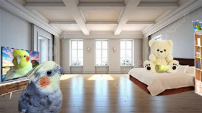
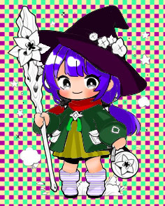
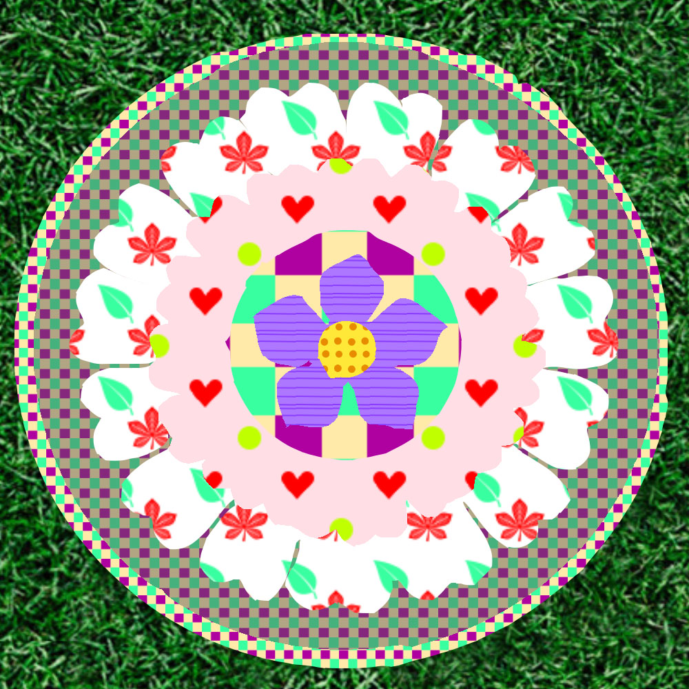
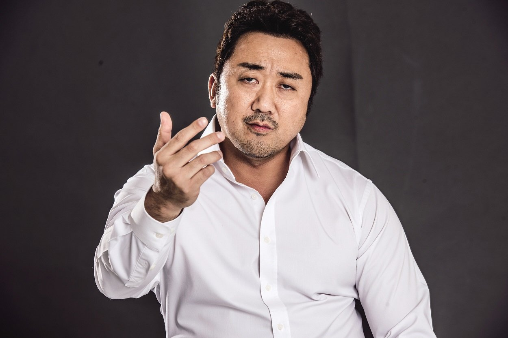
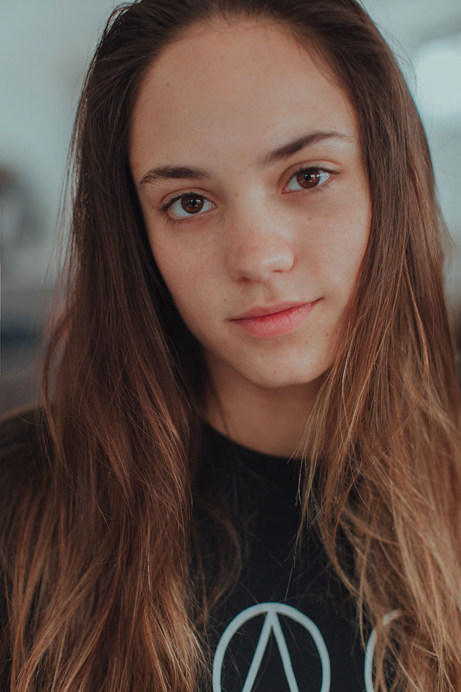
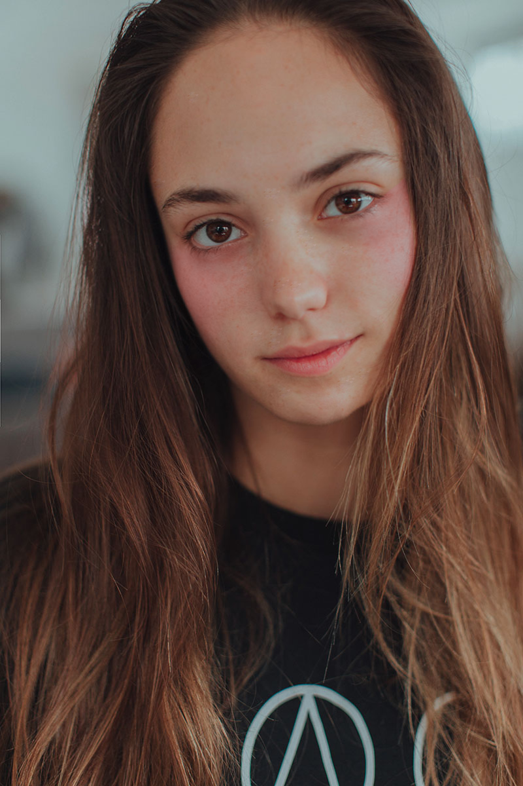
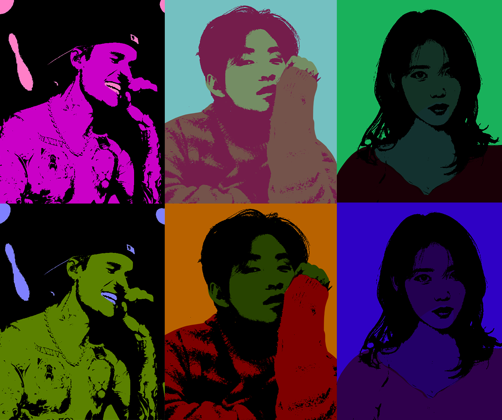

부러의 다락방
1주차는 오리엔테이션
이미 포토샵 자격증이 있는 상태라 완성도 높은 편
맘에 안 드는 건 안 올렸을 수도 (7주차는 시험)
2주차 다양한 선택영역 지정

3주차 문자툴
5주차 색, 그레이디언트, 패턴
 
6주차 인물보정

 
7주차: 중간고사
시험 내용
8주차 팝아트

검정 만들기: 이미지> 조정 > 채도감소+ 한계값
ctrl+U 해서 배경 색 만들기
곱하기 필터로 색 입히면 끝